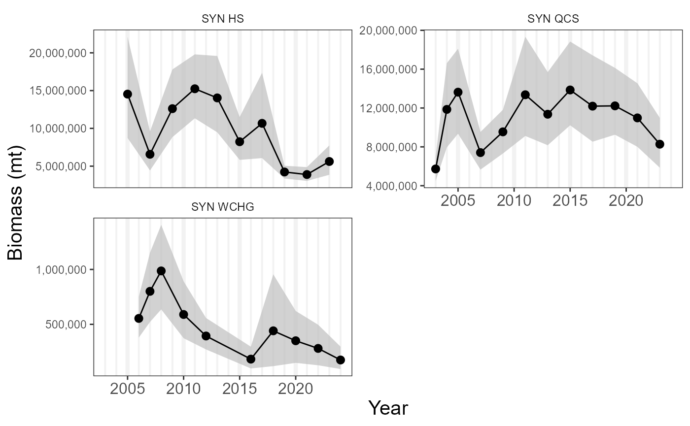
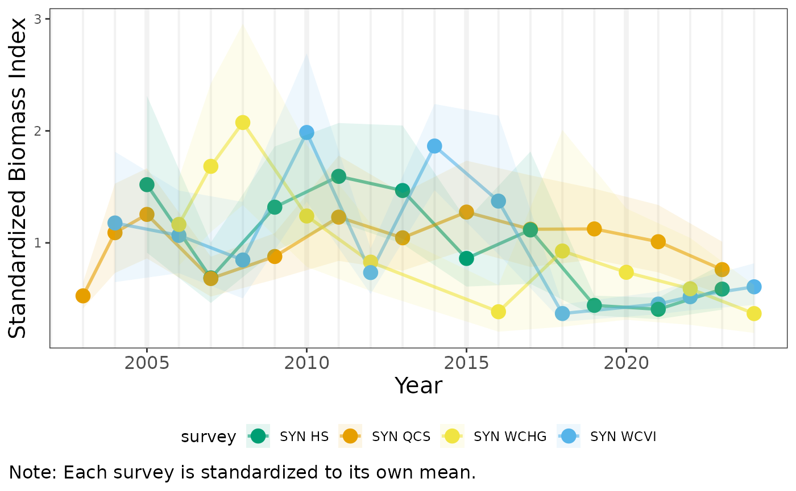

Biomass
a1_dbi_plots.RmdDesign-based index (DBI) functions use data collected and calculated
by associated science centers. These calculation methods may differ
among science centers, but in general they give an estimate of fish
biomass for a survey year with upper and lower 95% confidence intervals.
This data set is available in this package’s data-raw and are called
within the DBI functions plot_dbi() and
plot_stan_dbi(). The standardized indices are calculated
within the plot_stan_dbi() function by dividing a survey’s
data by the survey’s mean.
data("all_dbi")The functions take a species common or scientific name and one or
more surveys. surveys may be a single survey
area, a list of survey areas, or a survey group. For survey group “AK
BSAI” (Alaska Bering Sea, Aleutian Islands), the survey “U.S. Eastern
Bering Sea Standard Region” is excluded in favor of the extended “U.S.
Eastern Bering Sea Standard Plus NW Region” data.
#survey names
unique(all_dbi$survey)
#> [1] "SYN QCS"
#> [2] "SYN WCVI"
#> [3] "SYN HS"
#> [4] "SYN WCHG"
#> [5] "U.S. Gulf of Alaska"
#> [6] "U.S. Aleutian Islands"
#> [7] "U.S. Eastern Bering Sea Slope"
#> [8] "U.S. Eastern Bering Sea Standard Plus NW Region"
#> [9] "U.S. Eastern Bering Sea Standard Region"
#> [10] "U.S. Northern Bering Sea"
#> [11] "U.S. West Coast"
#grouped survey names
unique(all_dbi$survey_group)
#> [1] "PBS" "AK GULF" "AK BSAI" "NWFSC"If multiple surveys or a survey group is passed in
plot_dbi(), multiple plots will be shown separately. If
multiple surveys or a survey group is passed in
plot_stan_dbi(), data will be overlayed.

plot_stan_dbi(species = "arrowtooth flounder", surveys = "PBS")